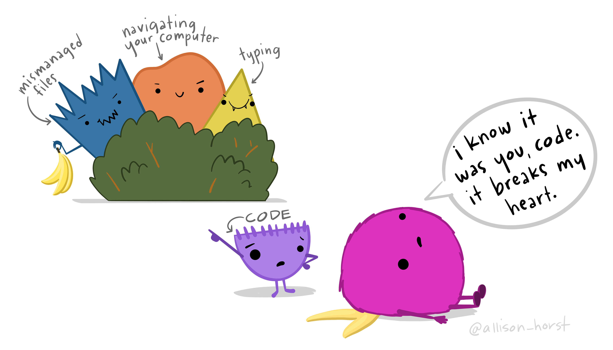
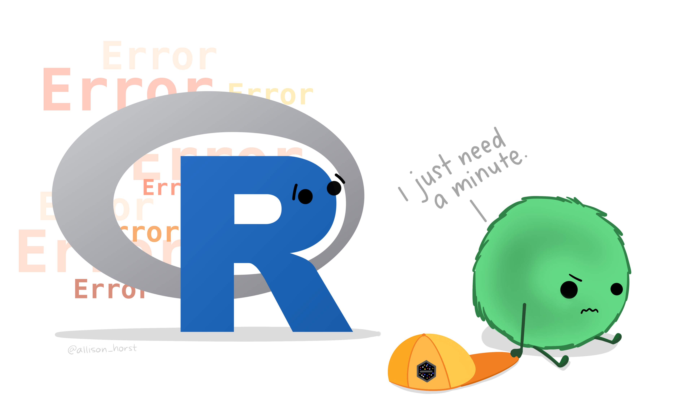
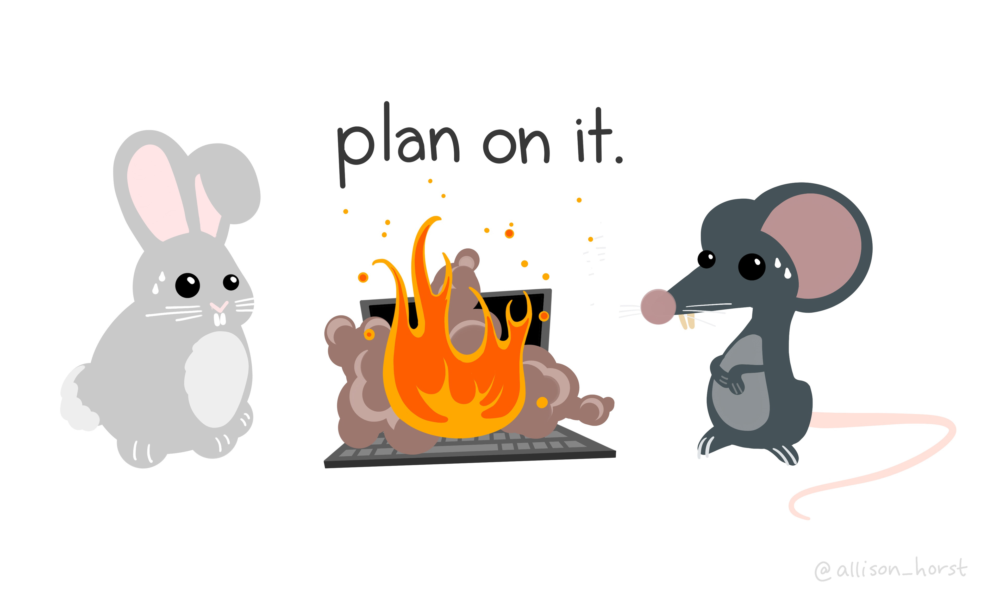
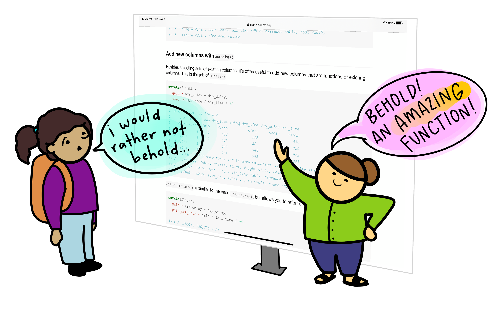
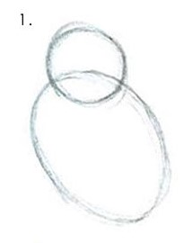
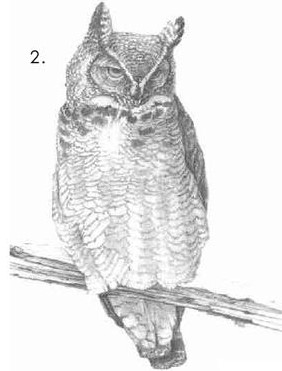

Replication & reproducibility in social science (Graduate-level)

In the fall of 2021, Jon was on the schedule to teach a new course titled “Replication & Reproducibility in Social Science” as a substitute for IU Criminal Justice Department’s typical graduate “Methods” degree requirement. The same semester, Jake was scheduled to teach the “Social Research Methods” course to first-year MA students in UNCW’s Department of Sociology and Criminology. He decided to join Jon in revising the class to focus on replication and reproducibility. The result was a jointly designed course focusing on replication and reproducibility issues broadly across the social sciences, but with specific examples from sociology and criminology. You can take a look at both Jon’s syllabus and Jake’s syllabus for the course. They are basically identical, but Jon’s syllabus includes a complete reference list for the assigned and recommended readings. Also, because of a weird scheduling quirk, Jake had to combine two weeks into one (Hype and Perverse Incentives).
In addition to teaching our students about replication and reproducibility issues more generally, we also wanted to help them learn some practical skills to help them produce more reliable and transparent research. To do this, we had students complete two sets of assignments: 1) R Assignments intended to provide a basic introduction to conducting reproducible research using the R Statistical Computing Environment and RStudio and 2) a Reproducibility Project where they had the reproduce the (descriptive) results of a published article on a topic of interest to them. The “R Assignments” ended up being a basic introduction to data wrangling, data visualization and reporting, and reproducible workflow with a primary emphasis on the Tidyverse suite of packages. The “Reproducibility Project” was an opportunity for students to apply these new skills to a topic that interested them, get their hands dirty with real-world data, and develop an appreciation for the challenges involved in computationally reproducing published work when you do not have access to the code used to clean, wrangle and analyze the data.
We have included these assignments as they were assigned in Jon’s class with light editing, where necessary, for student privacy reasons. In a forthcoming blog post we will discuss what we learned from designing this course and note what we would change going forward (and what Jake did change when revising the course for senior-level undergraduate criminology majors).
R Assignments

Assignment 1: Getting Started in R
The purpose of this first assignment is to demonstrate that you have downloaded the “base R” and “RStudio” statistical programs and can open a SPSS datafile in RStudio.

Assignment 2: Introduction to R Markdown
The purpose of this second assignment is to help you begin to explore your data in R and to do so within an RMarkdown document. The specific activities were inspired by the SPSS Exercises from the end of Chapter 1 in Bachman and Paternoster’s Statistics for Criminology & Criminal Justice, 4th Ed.

ggplot2(). Artwork by @allison_horstAssignment 3: Direct Reproduction
The purpose of this assignment is to reproduce findings from a published study in R, particularly one where the data are housed on ICPSR. In order to accomplish this we will need to do and learn the following: - Identify the data being used in the now classic study by Mark Warr published in Criminology titled: “Age, Peers, and Delinquency” (Warr, 1993) - Download it from ICPSR - Identify and wrangle the specific variables/items used in the study using the dplyr package that is a part of the Tidyverse. - Combine multiple data sets into one. - Reproduce the first part of Figure 1 from Warr’s (1993) study (as displayed on pg. 22 in his article) by introducing you to the powerful data visualization package ggplot2, which is also a part of the Tidyverse.

Assignment 4: Conceptual Replication
The purpose of this assignment is to perform a conceptual replication of some observations in Orcutt’s (1987) paper in Criminology titled: “Differential Association and Marijuana Use: A Closer Look at Sutherland (with a Little Help from Becker).” Since Orcutt’s (1987) original data are unavailable, we will assess whether some of his findings can be repeated with and generalize to a similar sample in the NYS data.
Reproducibility Project

Project Assignment 1: Find Article with Data to Replicate
The primary purpose of this first project assignment is to find an article on a topic of interest to you that has data available online via ICSPR (or another repository); eventually, you will be required to use these data in an attempt to reproduce a basic descriptive finding reported in a table or figure from the article. A secondary purpose of this assignment is to develop a sense of how (un)common it is to find research articles in the top journals of your field for which the authors have openly shared their data and code for reproducibility purposes.


Project Assignment 3: First Draft of Reproduction
Students are asked to create a first draft of their reproduction project which was ultimately peer-reviewed by one of their classmates. The directions are similar to Project Assignment 2 except students were expected to recode all variables and produce relatively clean and publication-ready versions of their tables and figures.

Project Assignment 4: Final Draft of Reproduction
Students are asked to finalize their reproduction project and provide a reproducible file structure. Essentially, they were asked to apply the skills they had learned throughout the course to produce an article or blog reproducing some (descriptive) results of a published study.
Reuse
Citation
@online{brauer and jake day,
author = {Brauer and Jake Day, Jon},
title = {Replication \& Reproducibility in Social Science
{(Graduate-level)}},
url = {https://www.reluctantcriminologists.com/course-materials/2_grad_RnR},
langid = {en}
}